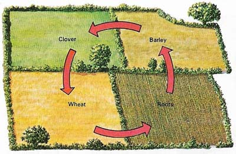
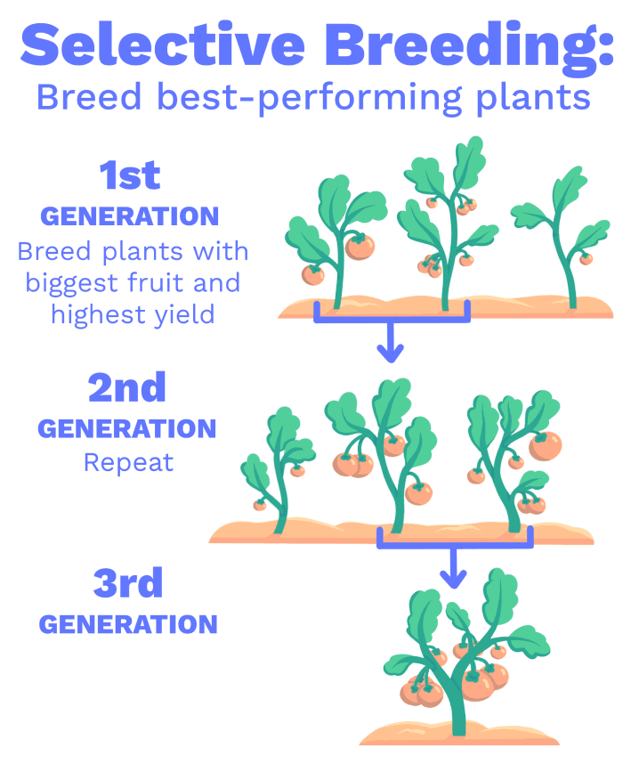
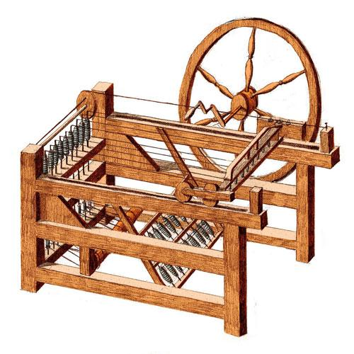
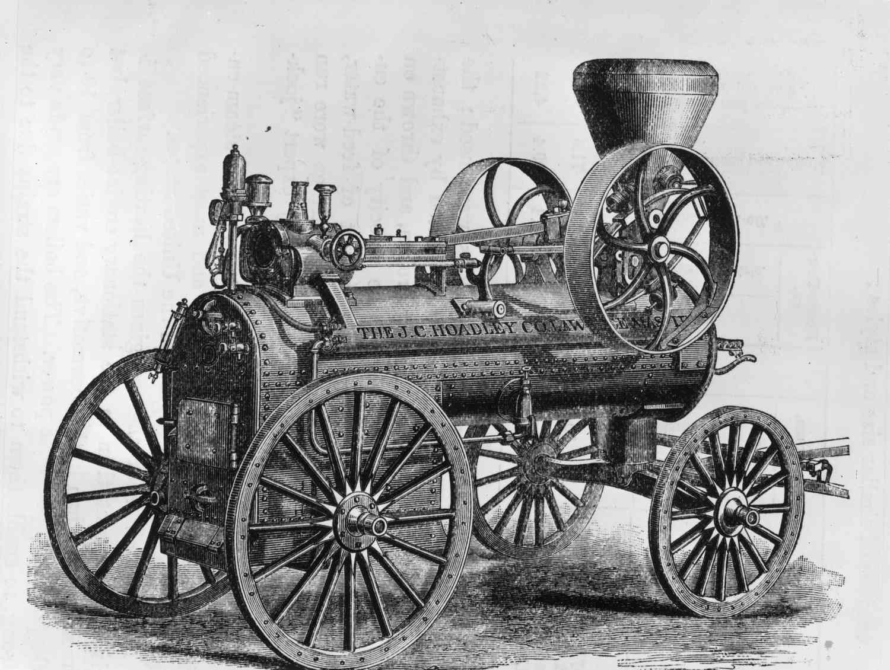
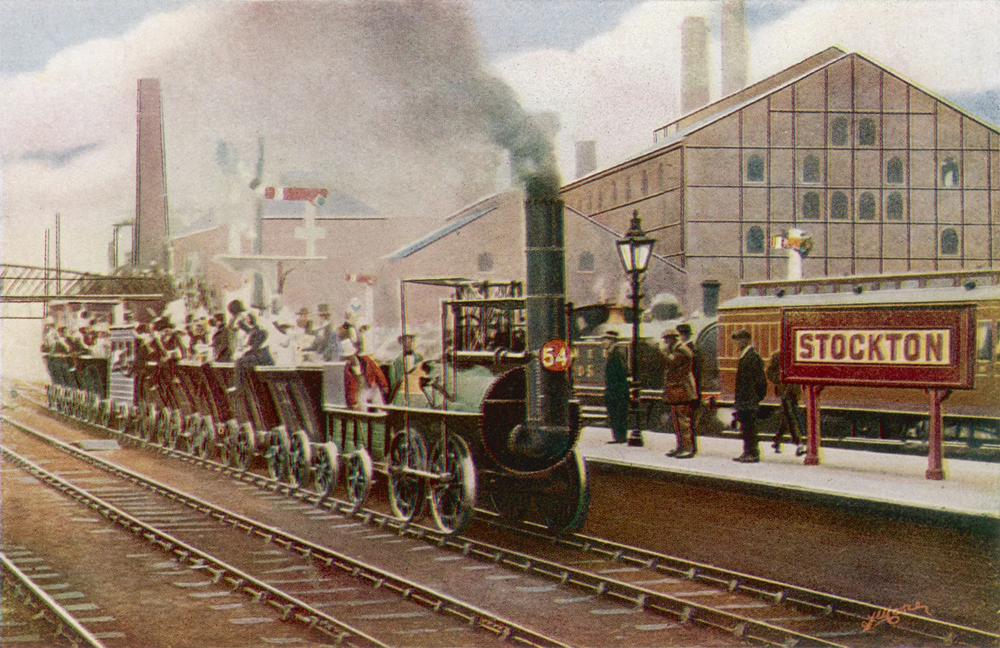
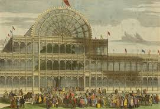

Industrial Revolution
The Industrial Revolution ignited around the mid-17th century and concluded in the late 19th century, ushering in a transformative era of technological and economic change.
It signaled a dramatic surge in both labor efficiency and land productivity, revolutionizing the way we harness resources and achieve growth.
Events
Development of the Norfolk four-course rotation, which increased crop and livestock yields, improved soil fertility, and reduced fallow periods.
In the mid-18th century, Robert Bakewell and Thomas Coke introduced selective breeding and inbreeding to enhance livestock quality.
In 1764, James Hargreaves invented the Spinning Jenny, revolutionizing textile production.
In 1775, James Watt improved the Steam Engine, transforming transportation and manufacturing.
Richard Arkwright established the first industrial factory in the late 18th century.
The Stockton and Darlington Railway (1825) and Liverpool and Manchester Railway (1830) revolutionized transportation.
The Crystal Palace Exhibition in 1851 showcased England's industrial leadership.
The second Industrial Revolution in the late 19th century advanced steel production, electricity, and led to urbanization.
However, it also introduced negative aspects like child labor and environmental pollution.
Negative Impacts
- Air pollution from factories and steam engines emitting smoke, soot, and carbon monoxide.
- Water pollution from untreated sewage and chemical disposal into rivers.
- Climate change due to the release of carbon dioxide from burning fossil fuels.
Environmental Conservation
The harmful effects of industrial growth and tech breakthroughs made it clear we needed to protect nature right away. This led to the rise of groups focused on saving the environment.
These groups aimed to tackle the rising worries about dirty air and water, destroyed habitats, and dwindling natural resources.
Because of this, governments set up national parks and wildlife reserves. These areas keep natural landscapes safe and protect animals at risk of dying out from human activities.
These protected spaces act as safe havens. Here, ecosystems can grow strong without the stress of industrial growth.